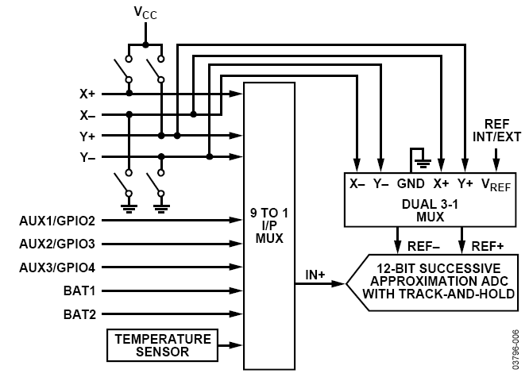
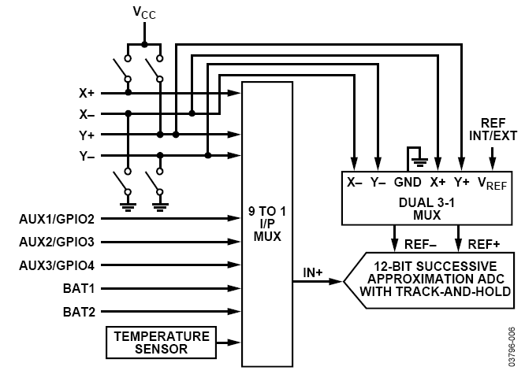

AD7877 Input Touch Screen Controller Linux Driver¶
Supported Devices¶
Description¶
The AD7877 is a 12-bit, successive approximation ADC with a synchronous serial interface and low on resistance switches for driving touch screens.
To reduce the effects of noise from LCDs, the acquisition phase of the on-board ADC is controlled via the STOPACQ pin. User-programmable conversion controls include variable acquisition time and first conversion delay. Up to 16 averages can be taken per conversion. There is also an on-board DAC for LCD back-light or contrast control. The AD7877 runs in either slave or master mode using a conversion sequencer and timer. It is ideal for battery-powered systems such as personal digital assistants with resistive touch screens and other portable equipment.
The AD7877 operates from a single 2.7 V to 5.25 V power supply, and features throughput rates of 125 kSPS. The AD7877 features direct battery measurement on two inputs, temperature and touch-pressure measurement.
The AD7877 also has an on-board reference of 2.5 V. When not in use, it can be shut down to conserve power. An external reference can also be applied and varied from 1 V to +VCC, with an analog input range of 0 V to VREF. The device includes a shutdown mode that reduces its current consumption to less than 1 μA.
 

See also: uclinux-dist:tslib
See also: AD7879 Touchscreen Device Driver
Software configurable features¶
Software configurable:
STOPACQ Polarity (LOW, HIGH)
First Conversion Delay (0.5us, 128us, 1ms, 8ms)
Acquisition Time (2us, 4us, 8us, 16us)
Number of Averages (1,4,8,16)
Pen Down Acquisition Interval Timer (convert once, every 0.5ms, 1ms, 8ms)
Source Code¶
Status¶
| Source | Mainlined? |
|---|---|
| git | Yes |
Files¶
| Function | File |
|---|---|
| driver | drivers/input/touchscreen/ad7877.c |
| include | include/linux/spi/ad7877.h |
Example platform device initialization¶
Touchscreen characteristics vary between boards and models. The platform_data for the device’s “struct device” holds this information.
These snippets are all from the same file. arch/blackfin/mach-bf537/boards/pnav10.c:
## include <linux/spi/ad7877.h>
Adding Linux driver support¶
Configure kernel with “make menuconfig” (alternatively use “make xconfig” or “make qconfig”)
Note
The AD7877 Driver depends on CONFIG_SPI
Input device support
-*- Generic input layer (needed for keyboard, mouse, ...)
< > Support for memoryless force-feedback devices
< > Polled input device skeleton
< > Sparse keymap support library
*** Userland interfaces ***
< > Mouse interface
< > Joystick interface
<*> Event interface
< > Event debugging
*** Input Device Drivers ***
[ ] Keyboards --->
[ ] Mice --->
[ ] Joysticks/Gamepads --->
[ ] Tablets --->
[*] Touchscreens --->
--- Touchscreens
< > ADS7846/TSC2046/AD7873 and AD(S)7843 based touchscreens (NEW)
<*> AD7877 based touchscreens
< > Analog Devices AD7879-1/AD7889-1 touchscreen interface (NEW)
[ ] Miscellaneous devices --->
Hardware I/O ports --->
Hardware configuration¶
Note
The AD7877 Linux Driver only uses the /DAV Data Available Interrupt. /PENIRQ is not used. STOPACQ can be used to reduce the effect of noise from an LCD screen on the touch screen measurements.
{kind=link}
Driver testing¶
Driver compiled as a module¶
Driver compiled into the kernel¶
Your kernel startup messages should include something like this
input: AD7877 Touchscreen as /class/input/input2
Use the evtest/event_test utility to test proper function¶
root:/> event_test /dev/input/event2
Input driver version is 1.0.0
Input device ID: bus 0x0 vendor 0x0 product 0x0 version 0x0
Input device name: "AD7877 Touchscreen"
Supported events:
Event type 0 (Sync)
Event type 1 (Key)
Event code 330 (Touch)
Event type 3 (Absolute)
Event code 0 (X)
Value 1268
Min 0
Max 4095
Event code 1 (Y)
Value 1250
Min 0
Max 4095
Event code 24 (Pressure)
Value 0
Min 0
Max 1000
Testing ... (interrupt to exit)
Event: time 67435.364000, type 1 (Key), code 330 (Touch), value 1
Event: time 67435.364000, type 3 (Absolute), code 0 (X), value 1624
Event: time 67435.364000, type 3 (Absolute), code 1 (Y), value 1514
Event: time 67435.364000, type 3 (Absolute), code 24 (Pressure), value 349
Event: time 67435.364000, -------------- Report Sync ------------
Event: time 67435.408000, type 3 (Absolute), code 0 (X), value 1626
Event: time 67435.408000, type 3 (Absolute), code 1 (Y), value 1516
Event: time 67435.408000, type 3 (Absolute), code 24 (Pressure), value 342
Event: time 67435.408000, -------------- Report Sync ------------
Event: time 67435.452000, type 3 (Absolute), code 1 (Y), value 1514
Event: time 67435.452000, type 3 (Absolute), code 24 (Pressure), value 339
Event: time 67435.452000, -------------- Report Sync ------------
Event: time 67435.496000, type 3 (Absolute), code 0 (X), value 1625
Event: time 67435.496000, type 3 (Absolute), code 24 (Pressure), value 343
Event: time 67435.496000, -------------- Report Sync ------------
Event: time 67435.596000, type 3 (Absolute), code 24 (Pressure), value 0
Event: time 67435.596000, type 1 (Key), code 330 (Touch), value 0
Event: time 67435.596000, -------------- Report Sync ------------
Common Problems¶
In case you see a message like this
spi0.2: Failed to probe AD7877 Touchscreen
This means that the SPI communication and initilaization with the AD7877 touchscreen controller/digitizer failed. check bus_num and chip_select in your platform device file
#if defined(CONFIG_TOUCHSCREEN_AD7877) || defined(CONFIG_TOUCHSCREEN_AD7877_MODULE)
{
.modalias = "ad7877",
.platform_data = &bfin_ad7877_ts_info,
.irq = IRQ_PJ11,
.max_speed_hz = 12500000, /* max spi clock (SCK) speed in HZ */
.bus_num = 0,
.chip_select = 2,
.controller_data = &spi_ad7877_chip_info,
},
#endif
Testing¶
See the uclinux-dist:tslib page for information on testing the touchscreen from userspace.
Interrupt¶
Check that the interrupt is registered.
Note
In case you touch the surface and don’t receive events, it’s likely that something with your /DAV Interrupt is wrong. check irq number in your platform device file
Note
In case you get a message like: evtest: No such device, it’s likely that you have not install the necessary modules
Aux functions¶
Under the device folder there are auxiliary functions such as temperature, GPIO, DAC and ADC read backs and controls.
root:/sys/class/input/input2> **cd device/**
root:/sys/devices/platform/bfin-spi.0/spi0.2> **ls -al**
drwxr-xr-x 3 root root 0 Jan 1 00:15 .
drwxr-xr-x 4 root root 0 Jan 1 2007 ..
-r--r--r-- 1 root root 4096 Jan 1 00:15 aux1
-r--r--r-- 1 root root 4096 Jan 1 00:15 aux2
-r--r--r-- 1 root root 4096 Jan 1 00:15 aux3
-r--r--r-- 1 root root 4096 Jan 1 00:15 bat1
-r--r--r-- 1 root root 4096 Jan 1 00:15 bat2
lrwxrwxrwx 1 root root 0 Jan 1 00:15 bus -> ../../../../bus/spi
-rw-rw-r-- 1 root root 4096 Jan 1 00:15 dac
-rw-rw-r-- 1 root root 4096 Jan 1 00:15 disable
lrwxrwxrwx 1 root root 0 Jan 1 00:15 driver -> ../../../../bus/spi/drivers/ad7877
-rw-rw-r-- 1 root root 4096 Jan 1 00:15 gpio4
lrwxrwxrwx 1 root root 0 Jan 1 00:15 input:event2 -> ../../../../class/input/input2/event2
lrwxrwxrwx 1 root root 0 Jan 1 00:15 input:input2 -> ../../../../class/input/input2
-r--r--r-- 1 root root 4096 Jan 1 00:15 modalias
drwxr-xr-x 2 root root 0 Jan 1 2007 power
lrwxrwxrwx 1 root root 0 Jan 1 00:15 subsystem -> ../../../../bus/spi
-r--r--r-- 1 root root 4096 Jan 1 00:15 temp1
-r--r--r-- 1 root root 4096 Jan 1 00:15 temp2
-rw-r--r-- 1 root root 4096 Jan 1 00:15 uevent
root:/sys/devices/platform/bfin-spi.0/spi0.2> **cat temp1**
963
root:/sys/devices/platform/bfin-spi.0/spi0.2> **cat temp1**
960
root:/sys/devices/platform/bfin-spi.0/spi0.2> **cat temp2**
1167
root:/sys/devices/platform/bfin-spi.0/spi0.2> **cat temp2**
1167
root:/sys/devices/platform/bfin-spi.0/spi0.2> **cat aux1**
1929
root:/sys/devices/platform/bfin-spi.0/spi0.2> **cat aux1**
1929